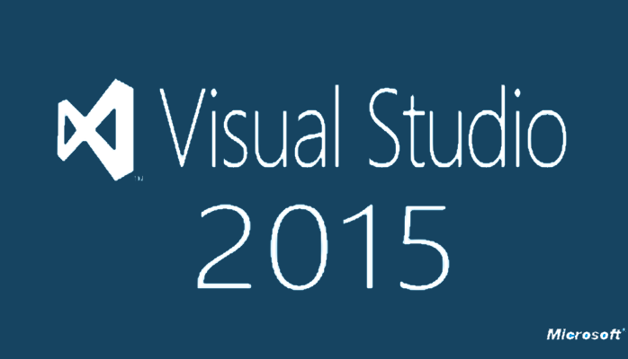
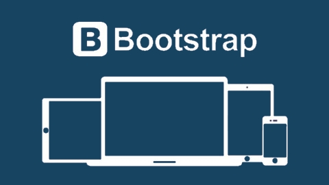

Areas of Expertise

.NET Development using Visual Studio 2015Visual Studio 2015 is a development environment developed by Microsoft to simplify creation of .NET powered websites and applications.
More Information...
SQL Server 2016SQL Server 2016 is a database server and environment developed by Microsoft to support websites and applications.
More Information...ASP.Net AJAXASP.NET AJAX (Asynchronous JavaScript And XML is provided by the latest versions of ASP.NET to simply the process of creating AJAX-enabled websites and web applications.
More Information...jQueryA cross-browser JavaScript framework developed to simplify the creation of interactive and rich user experiences. There are many plugins available and I have written a few jQuery plugins to enhance the ASP.NET AJAX development process.
More Information...
